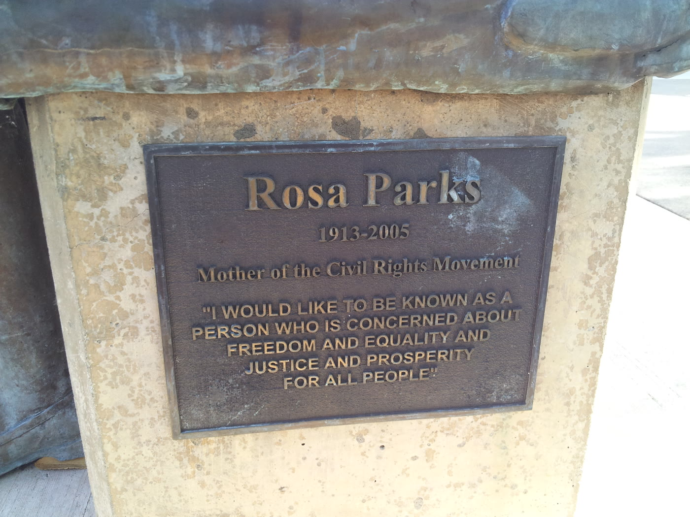

Eugene Station, 19 January 2009
Rosa Parks statue in Eugene
Pete Helzer's bronze shows Rosa Parks seated on a bus seat. It is the centerpiece of Rosa Parks Plaza at the Lane Transit District station in downtown Eugene. This is an independent Profitnet guide to that sculpture.

,_Eugene,_Oregon.jpg){kind=link}
See it
- Plaza
- Rosa Parks Plaza, 10th Avenue and Olive Street, Eugene, Oregon 97401. The bronze is outdoors.
- Station
- Eugene Station customer service, 1080 Willamette Street. Monday through Friday, 7 a.m. to 6 p.m. Phone 541-687-5555. Email LTD@LTD.org.
- Coordinates
- 44.04871 north, 123.09414 west. Map.
The seated bronze
The sculpture is bronze, made in 2009, and it shows Parks in a bus seat. Helzer's neighbor, Lacie Heffron, modeled for it. She said she felt honored to be the one who did. Helzer said the project carried a great deal of community interest and support.
The plaque on the base names Rosa Parks, gives the years 1913 to 2005, and calls her Mother of the Civil Rights Movement. Under that, in capitals, it carries her sentence:
I would like to be known as a person who is concerned about freedom and equality and justice and prosperity for all people.
Accounts of the ceremony open with Parks's own height, 5 feet 3 inches, and with her refusal to give up a seat on a Montgomery bus. That height is hers. The bronze is the seated figure at the plaza. The 1955 arrest, in front of the Empire Theatre, is a different place, covered in the Montgomery arrest-site guide.
The day the plaza took her name
Local businesses and groups decided in 2008 to raise the money. The sculpture cost $44,000. Lane Transit District committed the first $10,000. The other $34,000 came from local businesses, community members, civic organizations, and government agencies.
Hundreds of people came on Monday, 19 January 2009, Martin Luther King Jr. Day. Helzer's site captions the dedication crowd at the plaza on that date. The bronze was unveiled as the centerpiece, and Eugene Station Plaza was renamed Rosa Parks Plaza the same day. Dr. Ed Coleman spoke for the Committee to Honor Rosa Parks and pointed ahead to the inauguration of Barack Obama the next day.
Greg Evans, then vice president of the Lane Transit District Board, said Eugene was believed to be the first U.S. city to dedicate a bus station to Parks, just ahead of projects then scheduled in Detroit and Dallas. Mike Eyster, the board president, spoke about Parks taking the seat without knowing what would follow. Lane County Commissioner Bobby Green, who had come to Eugene in 1972, told the crowd that Rosa sat so others could stand up.
A plaque for Wiley Griffon was dedicated the same day. Griffon, an African American, piloted the city's first streetcar more than a century earlier. Helzer had already made the Ken Kesey statue that stands a couple of blocks away.
The station around the plaza
Eugene Station is the hub. Most district routes pass through it, so a bus into downtown is the ordinary way to the bronze. You do not buy a ticket to look at the sculpture. It sits outdoors on the plaza.
The station building at 1080 Willamette Street was remodeled in a project that started in January 2024, ran about 10 months, and finished in fall 2024, with a grand reopening in early 2025. The budget was $5.4 million, 80 percent from federal infrastructure grants and 20 percent from local matching dollars. The work covered wayfinding, restrooms, lighting, and the customer service center, and the district says exterior features were preserved. The customer service desk is open Monday through Friday from 7 a.m. to 6 p.m.
In May 2026 the district announced a summer series of free Friday performances at Rosa Parks Plaza, from 2 p.m. to 5 p.m., with exceptions noted on the performance listing.
Portland has a different Rosa Parks stop
The MAX Yellow Line station called Rosa Parks is in Portland's Arbor Lodge neighborhood, in the median of Interstate Avenue at Rosa Parks Way. It opened on 1 May 2004 as North Portland Boulevard station. After the city renamed that street Rosa Parks Way in fall 2006, TriMet changed the station signs on 4 February 2009. On TriMet maps the stop is N Rosa Parks Way. It has staggered side platforms, bike lockers, and artwork that refers to Native American art. It is a light-rail station, not this bronze. Portland's own outdoor figures on this site include Joan of Arc and Portlandia.
Questions
Where is the Rosa Parks statue?
It stands outdoors at Rosa Parks Plaza, the Lane Transit District plaza at Eugene Station. The district places the plaza at 10th Avenue and Olive Street, Eugene, Oregon 97401.
Who made it, and when was it unveiled?
Pete Helzer made the bronze of Rosa Parks seated on a bus seat. It was unveiled on 19 January 2009, Martin Luther King Jr. Day, the day Eugene Station Plaza was renamed Rosa Parks Plaza. His neighbor Lacie Heffron modeled for it.
What did it cost?
The sculpture cost $44,000. Lane Transit District put in the first $10,000, and local businesses, civic groups, community members, and government agencies raised the other $34,000.
Is the Portland MAX stop the same statue?
No. Rosa Parks station on the MAX Yellow Line is a light-rail stop in Portland, in the median of Interstate Avenue at Rosa Parks Way. The signs there changed on 4 February 2009. The Eugene bronze is a separate sculpture at the bus plaza.
How do you see the bronze?
The bronze is outdoors at the plaza, so you do not need a ticket to see it. Eugene Station at 1080 Willamette Street is the hub, and the customer service center is open Monday through Friday from 7 a.m. to 6 p.m. The phone is 541-687-5555.
Sources
- Associated Press, via OregonLive, 20 January 2009. The unveiling, the $44,000 cost, Greg Evans on the station dedication, the Kesey statue, and the Wiley Griffon plaque.
- KATU, 19 January 2009. Pete Helzer, the model Lacie Heffron, and the renamed plaza.
- Pete Helzer. Dedication crowd at Rosa Parks Plaza on 19 January 2009.
- Lane Transit District, Rosa Parks Plaza. Plaza address at 10th Avenue and Olive Street.
- Lane Transit District, Eugene Station modernization. The 2024 remodel, hours, and 1080 Willamette Street.
- Statue of Rosa Parks (Eugene, Oregon). Artist, year, medium, and coordinates.
- Rosa Parks station (TriMet). The Portland MAX stop, a different place.
Last updated .